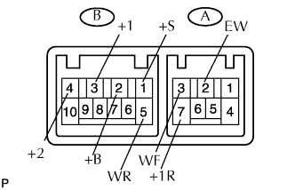

CÔNG TẮC GẠT NƯỚC > KIỂM TRA |
| 1. KIỂM TRA CÔNG TẮC GẠT NƯỚC VÀ RỬA KÍNH |
|  |
Đo điện trở của công tắc.
| Nối dụng cụ đo | Tình trạng công tắc | Điều kiện tiêu chuẩn |
| B-3 (+1) - B-2 (+B) | MIST | Dưới 1 Ω |
| B-3 (+1) - B-1 (+S) | OFF | Dưới 1 Ω |
| B-3 (+1) - B-1 (+S) | INT | Dưới 1 Ω |
| B-3 (+1) - B-2 (+B) | LO | Dưới 1 Ω |
| B-4 (+2) - B-2 (+B) | HI | Dưới 1 Ω |
| Nối dụng cụ đo | Tình trạng công tắc | Điều kiện tiêu chuẩn |
| A-3 (WF) - A-2 (EW) | OFF | 10 kΩ trở lên |
| A-3 (WF) - A-2 (EW) | ON | Dưới 1 Ω |
| Nối dụng cụ đo | Tình trạng công tắc | Điều kiện tiêu chuẩn |
| A-2 (EW) - B-5 (WR) | WASH (vị trí công tắc gạt nước sau OFF) | Dưới 1 Ω |
| A-2 (EW) - B-5 (WR) A-7 (+1R) - B-5 (WR) A-2 (EW) - A-7 (+1R) | OFF | 10 kΩ trở lên |
| A-2 (EW) - A-7 (+1R) | ON | Dưới 1 Ω |
| A-2 (EW) - B-5 (WR) A-7 (+1R) - B-5 (WR) A-2 (EW) - A-7 (+1R) | WASH (vị trí công tắc gạt nước sau ON) | Dưới 1 Ω |
Kiểm tra hoạt động ngắt quãng.
Nối cực dương (+) ắc quy vào cực B-3 (+1) và cực âm (-) ắc quy vào cực A-2 (EW).
Nối cực dương (+) ắc quy vào cực B-2 (+B) và cực âm (-) ắc quy vào cực A-2 (EW) và B-1 (+S).
Bật công tắc gạt nước đến vị trí INT.
Nối cáp âm (+) ắc quy vào cực B-1 (+S) trong 5 giây.
Nối cáp âm (-) ắc quy vào cực B-1 (+S). Hoạt động rơle gạt nước ngắt quãng và kiểm tra điện áp giữa cực B-3 (+1) và A-2 (EW).
Kiểm tra hoạt động rửa kính chắn gió.
Tắt công tắc gạt nước OFF.
Nối cực dương (+) ắc quy vào cực B-2 (+B) và cực âm (-) ắc quy vào cực A-2 (EW) và B-1 (+S).
Nối cực dương (+) ắc quy vào cực B-3 (+1) và cực âm (-) ắc quy vào cực A-2 (EW).
Bật công tắc rửa kính ON và OFF, và kiểm tra điện áp giữa cực B-3 (+1) và A-2 (EW).